Contenido del manual
Contenido
Antes de empezar
El sistema de ASPY te permite agendar tus terapias desde el celular o la computadora, sin llamadas ni filas. Aquí verás qué necesitas y cómo se organiza una cita.
Lo que necesitas
- Un celular o computadora con internet.
- Un correo electrónico que uses de verdad (con él entrarás al sistema).
- Tu número de cédula o pasaporte.
- Para pagar: hacer una transferencia bancaria y guardar la foto o el PDF del comprobante.
¿Cómo funciona una cita?
- Eliges el servicio, el profesional, el día y la hora.
- Haces la transferencia y subes el comprobante.
- El personal de ASPY revisa tu pago y confirma la cita.
- Asistes a tu terapia.
- Tu profesional sube el reporte de la sesión, que podrás leer en el sistema.
Los colores de tus citas
En tu calendario, cada cita tiene un color según cómo va:
| Estado | Qué significa |
|---|---|
| Guardada | Ya pediste la cita y subiste tu comprobante. ASPY está revisando el pago. |
| Agendada | ¡Pago aprobado! Tu cita está confirmada. |
| Asistió | Fuiste a tu cita. |
| No asistió | La cita pasó y no asististe. |
| Cancelada | La cita se canceló y el horario quedó libre. |
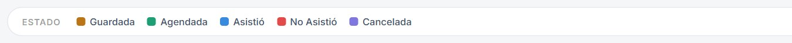
Las personas, citas y comprobantes que verás en las imágenes son ejemplos. En tu cuenta verás tus propios datos.
Crear tu cuenta
Solo se hace una vez. Si ya tienes cuenta, salta al capítulo 3.
- Entra a la página de ASPY
Abre aspy-web.vercel.app y presiona Ingresar (arriba a la derecha). También puedes usar el botón Agendar una cita.
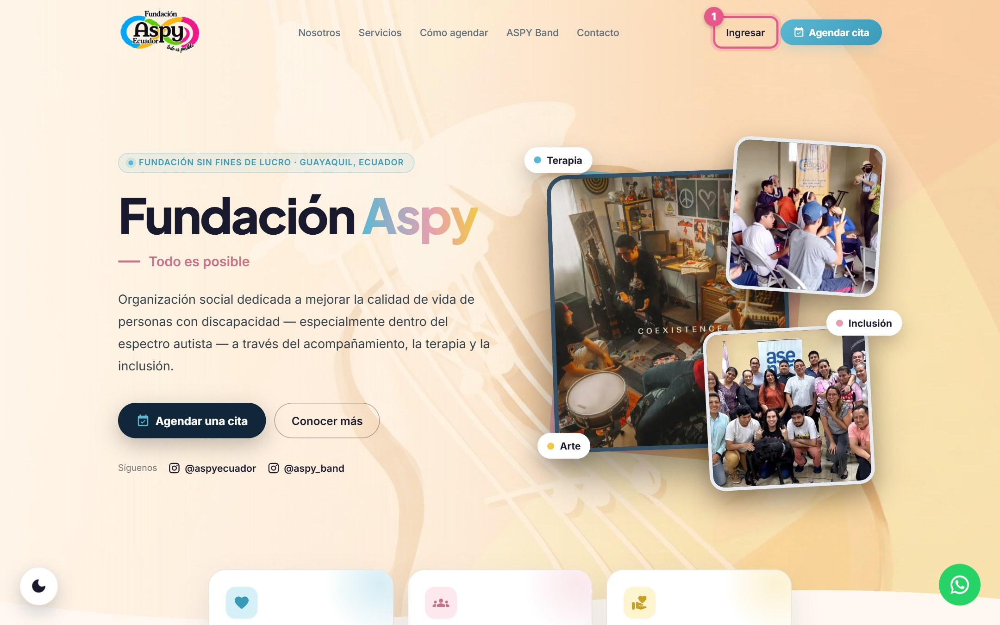
- Elige “Regístrate”
Debajo del formulario de ingreso, presiona Regístrate.
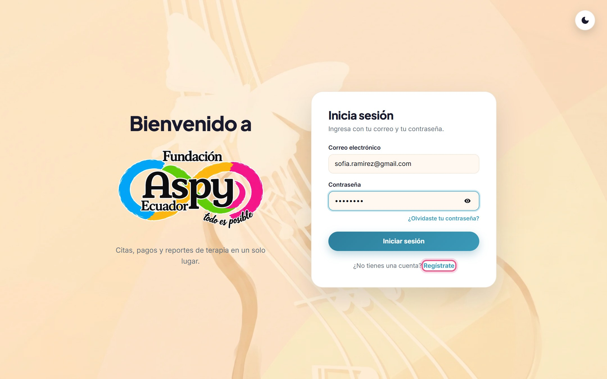
- Paso 1 de 3: tus datos personales
Escribe tu nombre y tu apellido, y elige una opción en cada lista. Para la fecha de nacimiento puedes escribirla (día/mes/año) o tocar el ícono del calendario y elegir el año, el mes y el día. Si tu ocupación no aparece, elige Otra y escríbela en el campo que aparece 1. Al final elige el tipo de identificación y escribe el número 2: la cédula lleva 10 números y el RUC 13 (el campo no acepta letras). Presiona Siguiente 3.
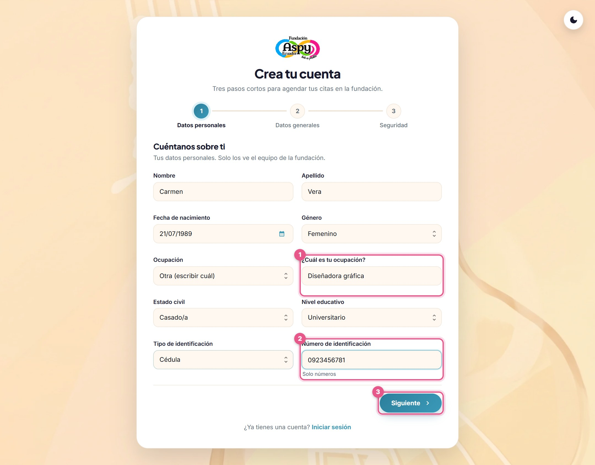
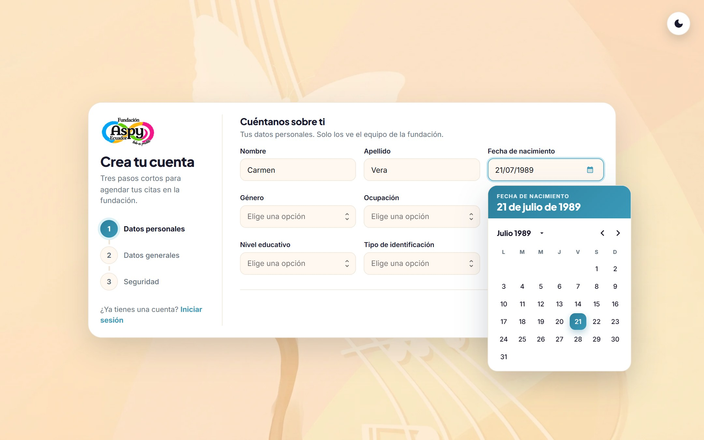
El calendario de la fecha de nacimiento: primero el año, luego el mes y al final el día. - Paso 2 de 3: contacto y dirección
Escribe tu teléfono solo con números (celular: 10 números que empiezan con 09; fijo: 9 números que empiezan con 0). Elige provincia y ciudad (las ciudades aparecen después de elegir la provincia), completa tu dirección y presiona Siguiente.
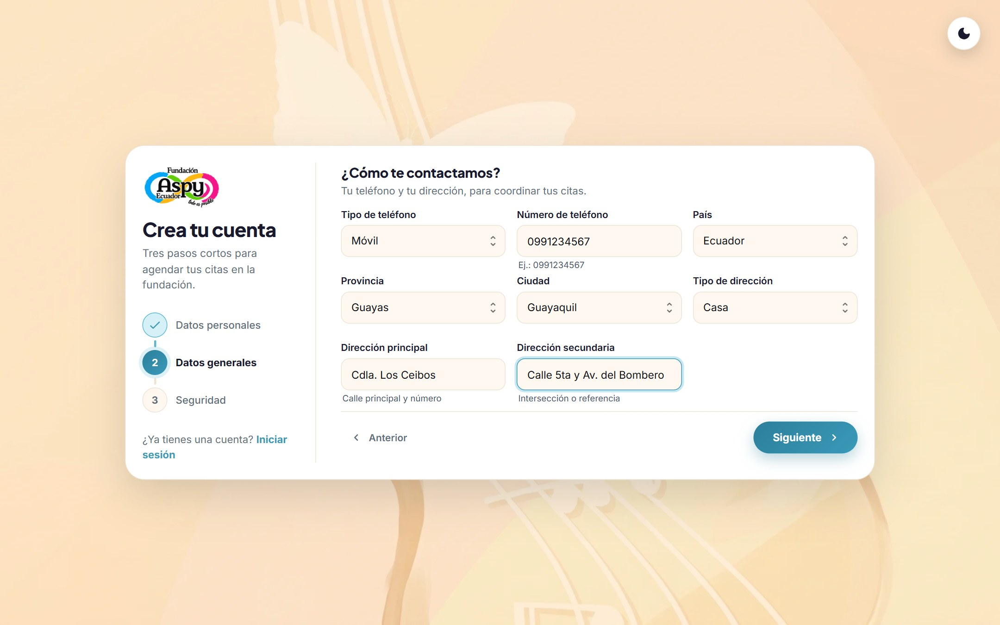
- Paso 3 de 3: correo y contraseña
Escribe tu correo y una contraseña de al menos 8 caracteres (dos veces, para confirmarla; el ojo 👁 la muestra u oculta). Luego toca la tarjeta Acepta la política de privacidad.
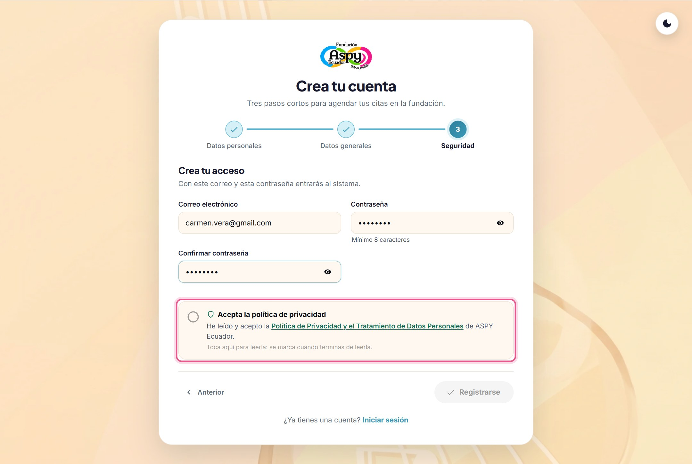
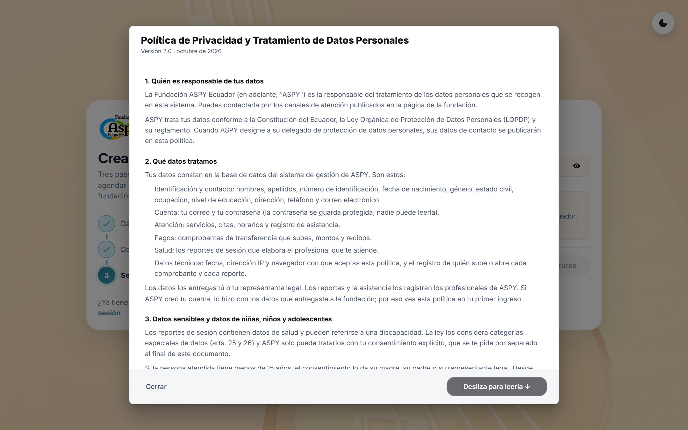
Se abre la política. Léela hasta el final… 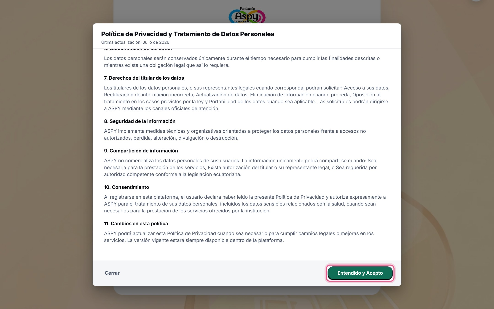
…marca las tres casillas (1) y presiona Acepto (2). Al final de la política están las casillas de tu consentimiento. Son tres, ninguna viene marcada y cada una autoriza una cosa distinta:
- Mis datos personales: que ASPY use tus datos para tu cuenta, tus citas y tus pagos.
- Datos de salud y de discapacidad: que se registren los reportes de sesión y el seguimiento de la atención.
- Guardado fuera del Ecuador: que tus datos se guarden en los servidores del sistema, que están en otro país.
Para crear la cuenta hay que marcar las tres. Mientras falte algo, el botón te dice qué falta.
👨👩👧Si la cuenta es de una persona menor de 15 años, el consentimiento lo da su madre, su padre o su representante legal: el sistema pide su nombre completo y su número de identificación antes de las casillas. Entre los 15 y los 17 años se elige quién lo da.
- Termina el registro
Con la política aceptada 1 (la tarjeta se pone verde), presiona Registrarse 2.
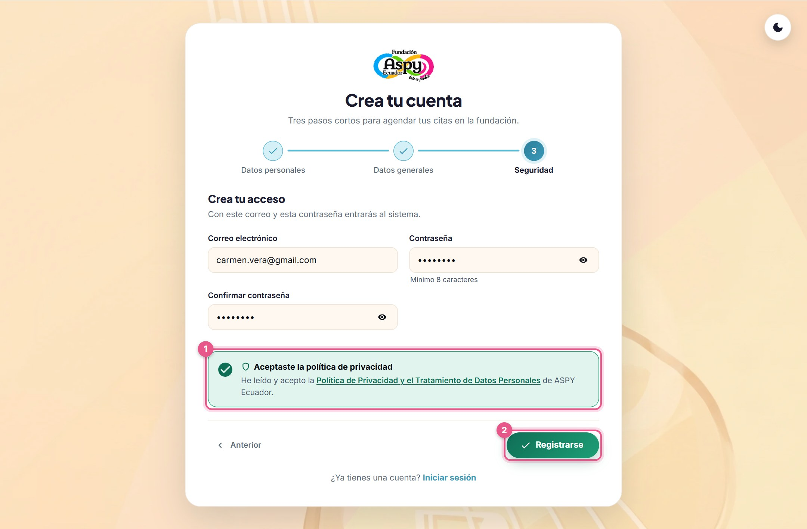
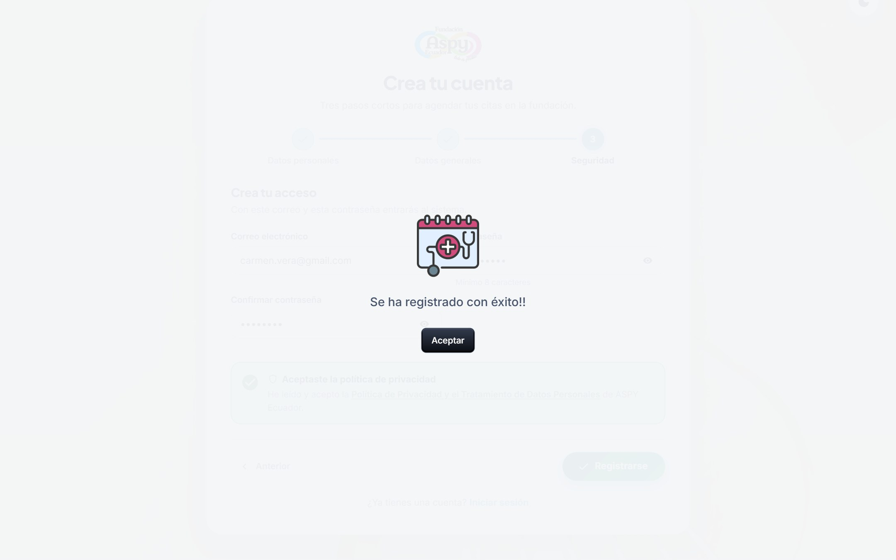
Verás este mensaje. Presiona Aceptar y ya puedes ingresar.
Guarda bien tu contraseña. Si la olvidas, la fundación te asigna una nueva (capítulo 3).
Ingresar al sistema
Cada vez que quieras usar el sistema, entra con tu correo y tu contraseña.
- Abre la pantalla de ingreso
En la página de ASPY presiona Ingresar.
- Escribe tus datos
Tu correo 1, tu contraseña 2 y presiona Iniciar sesión 3.
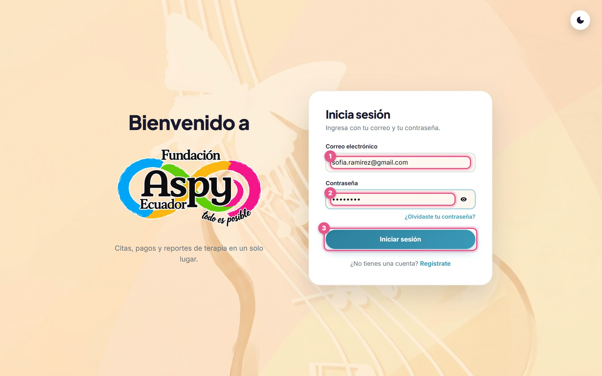
Tu sesión dura hasta 7 días en el mismo equipo. Si usas una computadora prestada, cierra sesión al terminar (capítulo 9).
Si escribes mal la contraseña muchas veces seguidas, el sistema te pedirá esperar un minuto antes de intentar de nuevo.
En las pantallas de ingreso y de registro, el botón redondo de arriba a la derecha (🌙 / ☀️) cambia entre modo claro y modo oscuro.
Si la fundación creó tu cuenta
Cuando la secretaría o la administración crean tu cuenta, te entregan tu correo y tu contraseña. La primera vez que entres, el sistema te muestra la Política de Privacidad: léela hasta el final (desliza hacia abajo), marca las tres casillas de tu consentimiento y presiona Acepto 1. Se pide una sola vez, y de nuevo solo si la política cambia. Si no quieres aceptarla, presiona Cerrar sesión 2 y comunícate con la fundación.
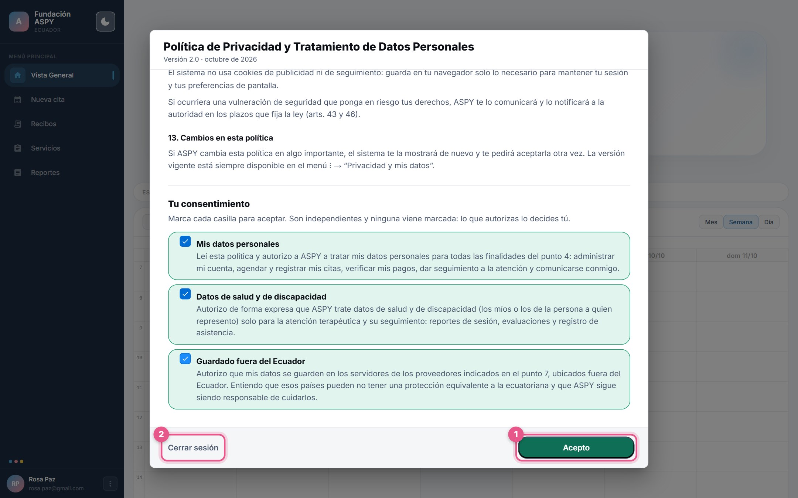
¿Olvidaste tu contraseña?
Presiona ¿Olvidaste tu contraseña?, debajo del campo de contraseña. Por seguridad, la contraseña la restablece la fundación: comunícate con la secretaría o la administración y te asignarán una nueva.
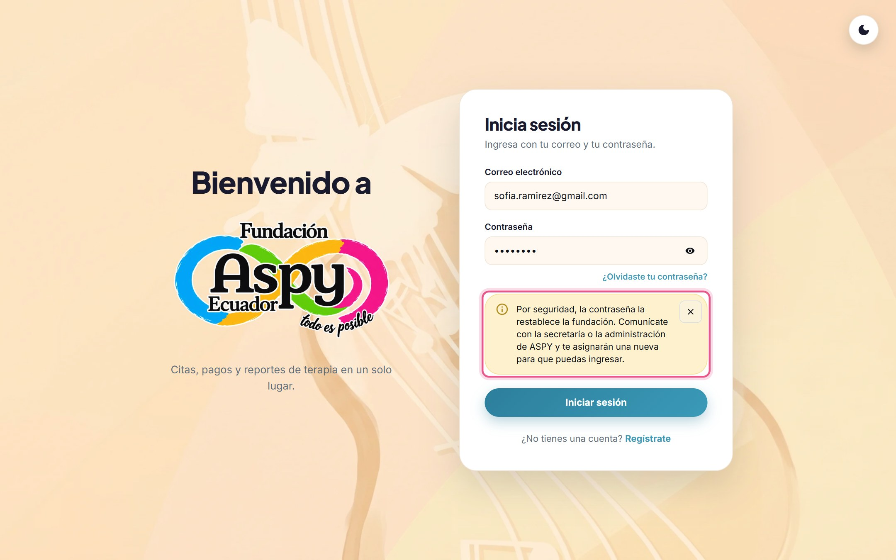
Tu panel
Al entrar llegas a la Vista General: un saludo y el calendario con todas tus citas.
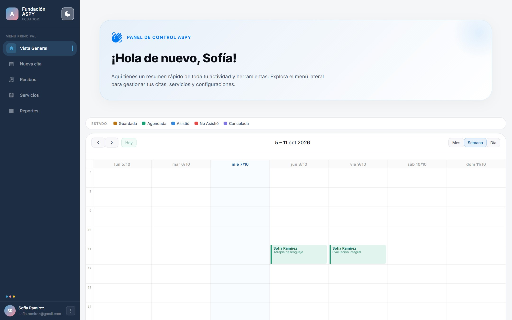
El menú de la izquierda
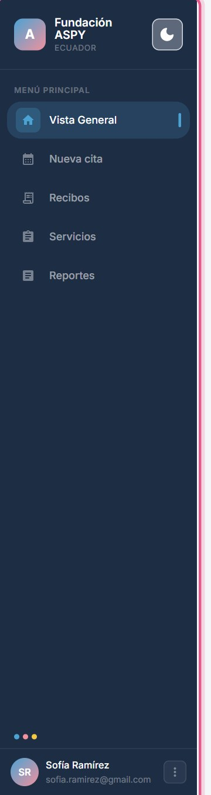
- Vista General: tu calendario de citas.
- Nueva cita: agendar y pagar una cita (capítulo 5).
- Recibos: descargar los recibos de tus pagos (capítulo 7).
- Servicios: los servicios de ASPY y sus precios.
- Reportes: tu historial de citas y los reportes de cada sesión (capítulo 8).
Abajo están tu nombre y el botón ⋮ con tu perfil y la opción para cerrar sesión. Arriba, junto al logo, está el botón para cambiar a modo oscuro.
Cómo moverte en el calendario
- Las flechas ‹ › pasan a la semana anterior o siguiente. Hoy te regresa a la fecha actual.
- Mes / Semana / Día cambian cuánto tiempo ves a la vez.
- Haz clic en una cita para ver sus detalles (capítulo 6).
Agendar y pagar una cita
Primero eliges cuándo y con quién; después pagas por transferencia y subes el comprobante. Toma unos 3 minutos.
- Abre “Nueva cita”
En el menú de la izquierda presiona Nueva cita. Luego abre la lista Servicio y elige el que necesitas.
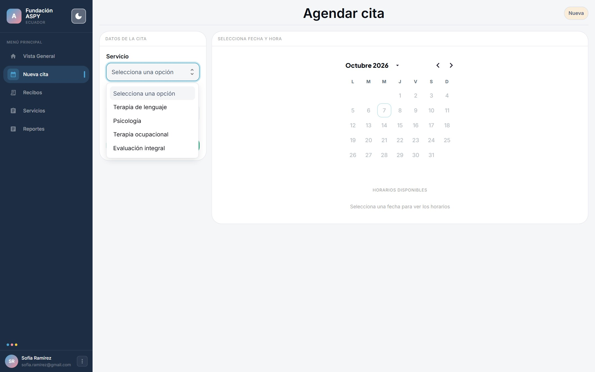
- Elige el profesional
En la lista Profesional solo aparecen quienes dan ese servicio.
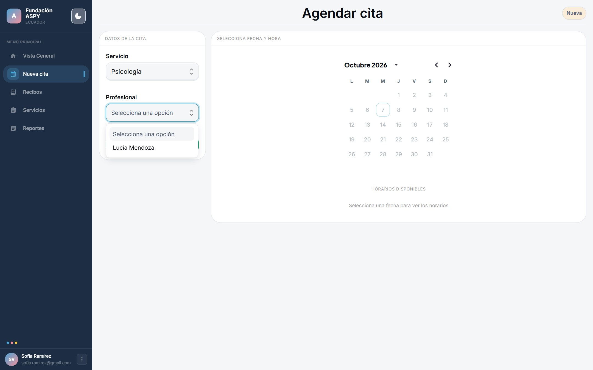
- Mira los días disponibles
En el calendario de la derecha, los días pintados de verde son los que tienen horarios libres con ese profesional. Solo aparecen horarios que todavía no empiezan.
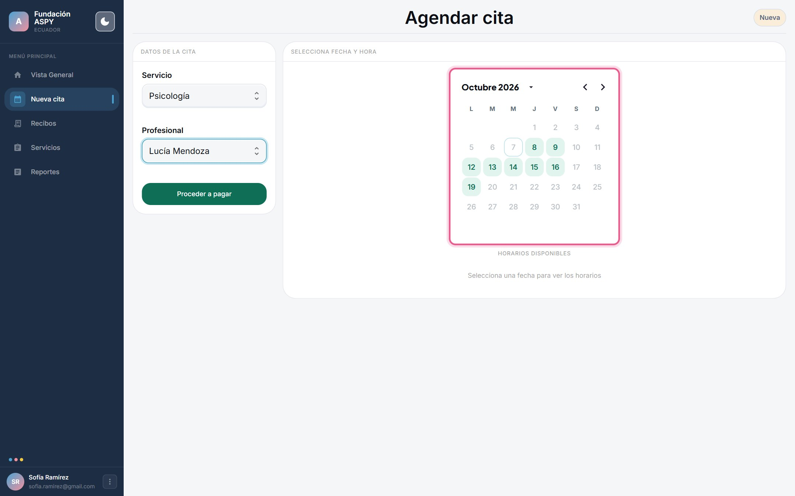
- Elige día y hora
Toca el día 1, elige una de las horas que aparecen abajo 2 y presiona Proceder a pagar 3.
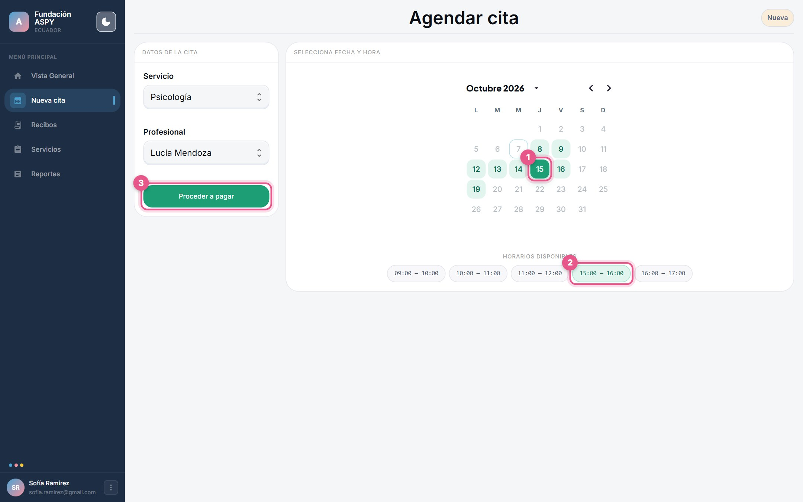
- Haz la transferencia
Verás el total a pagar y los datos de la cuenta de la fundación 1. Con el ícono de copiar puedes copiar el número de cuenta. Haz la transferencia desde la app o la web de tu banco y guarda el comprobante (captura de pantalla o PDF).
🏦La cuenta de la imagen es de ejemplo. Transfiere siempre a la que aparece en tu pantalla: la registra la fundación. Si ves un aviso de que aún no hay datos bancarios, comunícate con la fundación para agendar.
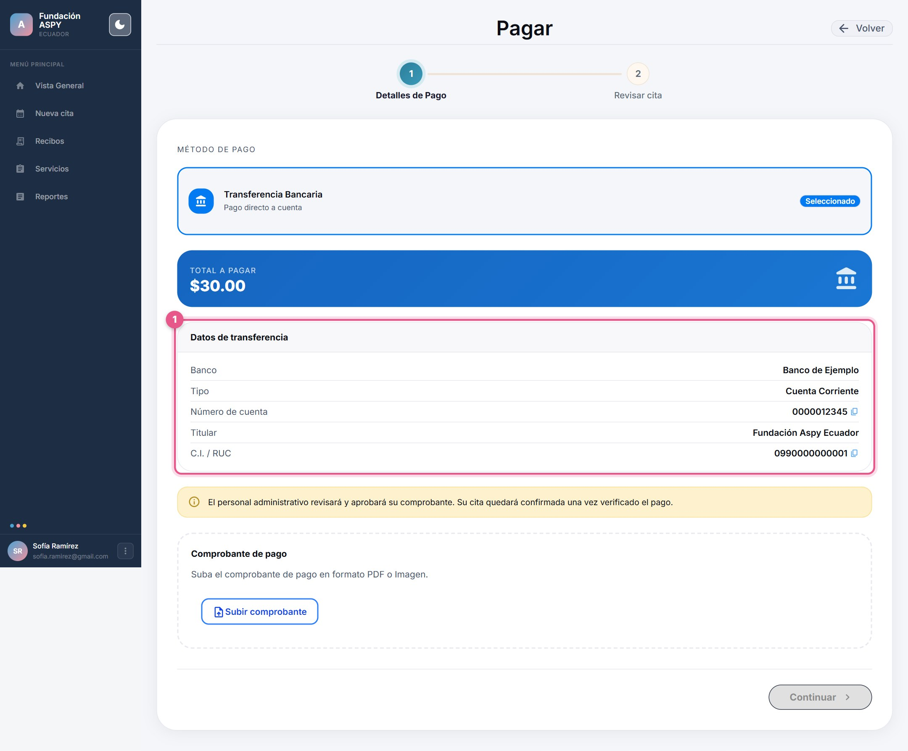
- Sube el comprobante
Presiona Subir comprobante y elige la foto o el PDF (máximo 8 MB). Cuando diga “Archivo cargado correctamente” 1, presiona Continuar 2.
🔒Tu comprobante es privado: solo lo ven tú y el personal de ASPY que revisa los pagos. No tiene un enlace público.
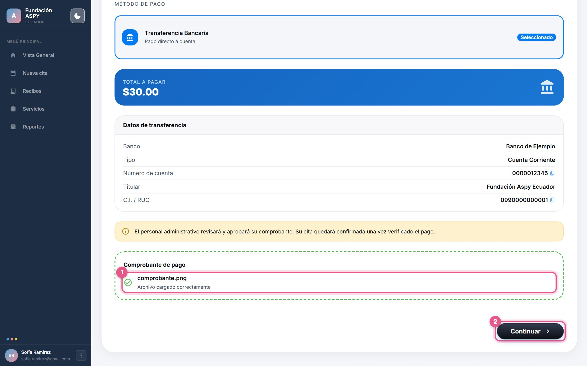
- Revisa y confirma
Revisa el resumen. Si todo está bien, presiona Finalizar reserva. Si necesitas corregir algo, usa Anterior.
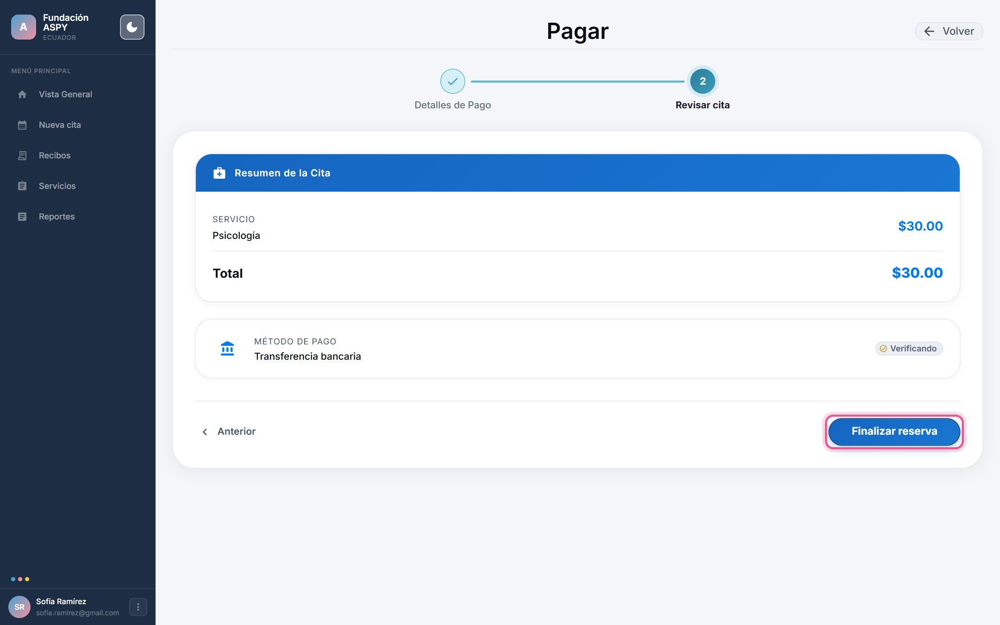
- ¡Listo!
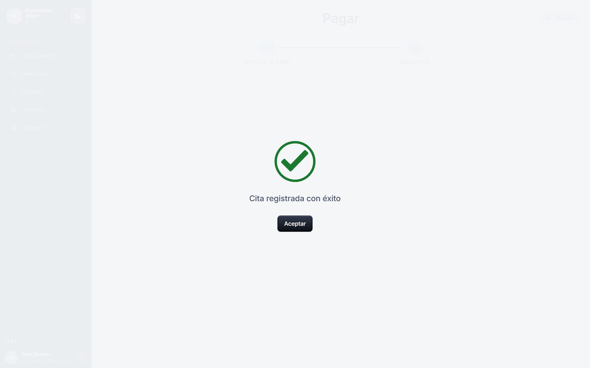
Tu cita aparece en el calendario en color naranja (Guardada) mientras ASPY revisa el pago. Cuando lo aprueben, cambia a verde (Agendada).
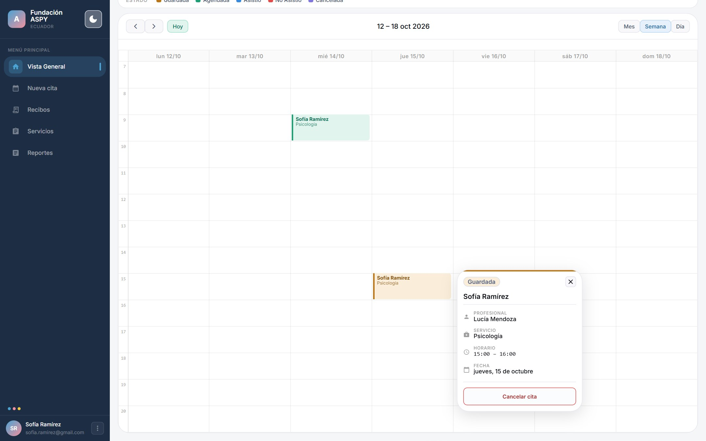
El horario queda apartado para ti desde que finalizas la reserva. Si el comprobante no es válido, ASPY puede rechazarlo: la cita se elimina y el horario se libera.
Asegúrate de que en el comprobante se lean bien el monto, la fecha y el número de transacción. Eso ayuda a que lo aprueben rápido.
Ver o cancelar una cita
Haz clic en cualquier cita de tu calendario para ver con quién es, el servicio, la hora y la fecha.
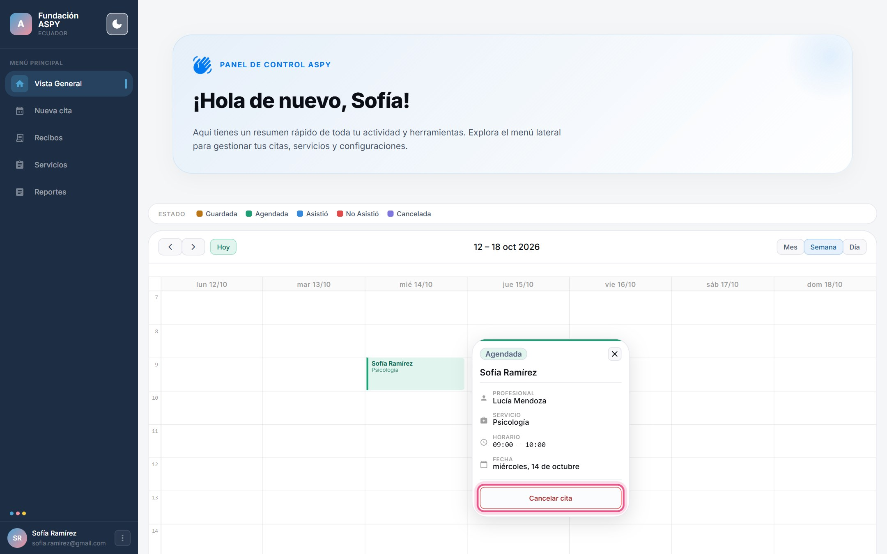
Para cancelar
- Abre la cita en el calendario.
- Presiona Cancelar cita. El sistema te pregunta si estás seguro: confirma con Sí, cancelar (o presiona No si te equivocaste).
- La cita pasa a Cancelada y el horario queda libre para otra persona.
Solo puedes cancelar con más de 24 horas de anticipación. Si falta menos, el botón no aparece: comunícate directamente con la fundación.
Para cambiar la fecha de una cita, cancélala y agenda una nueva. Pregunta a la fundación qué pasa con el pago de la cita cancelada.
Recibos y servicios
Cada pago genera un recibo que puedes descargar en PDF cuando quieras.
Descargar un recibo
Entra a Recibos y presiona la flecha de descarga de la fila que quieras. El recibo se guarda en tu equipo como PDF.
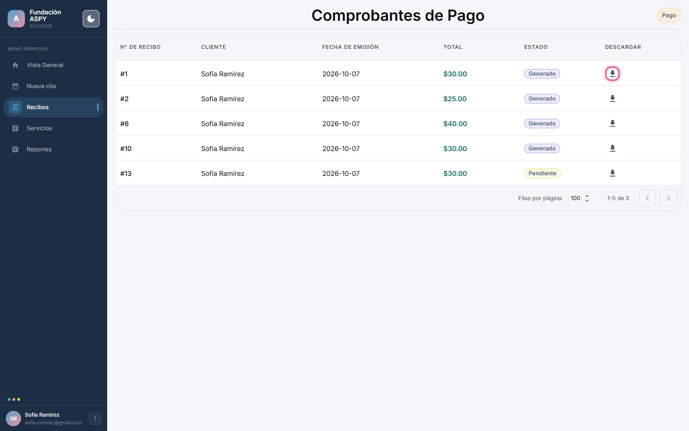
La columna Estado dice Generado cuando el pago ya fue aprobado, o Pendiente si ASPY aún lo está revisando.
Ver los servicios y precios
En Servicios verás todos los servicios disponibles y su costo por sesión.
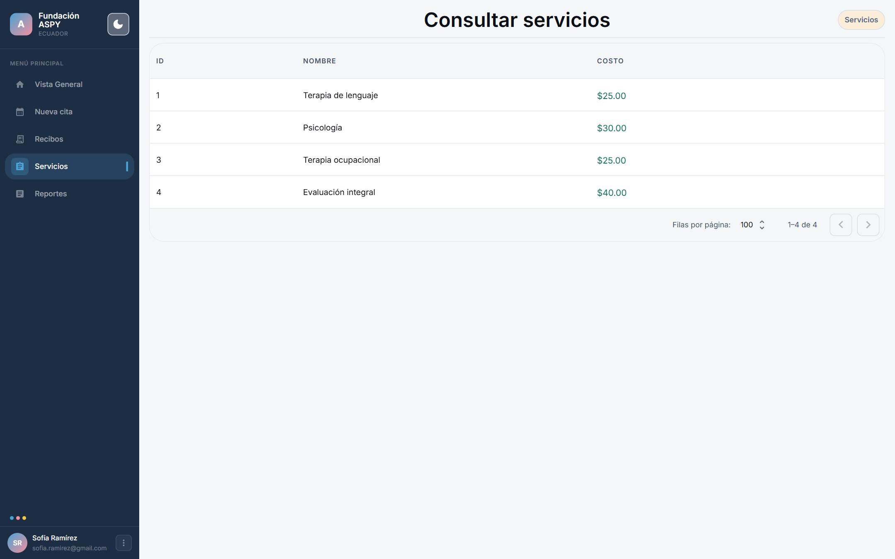
Reportes de tus sesiones
Después de cada sesión, tu profesional sube un reporte con observaciones y recomendaciones. Es privado: solo lo ven tú, tu profesional y la administración, y solo con la sesión iniciada.
- Abre “Reportes”
Verás tu historial de citas, de la más antigua a la más nueva. Las que ya tienen reporte muestran Ver reporte; las demás dicen “Sin reporte”.
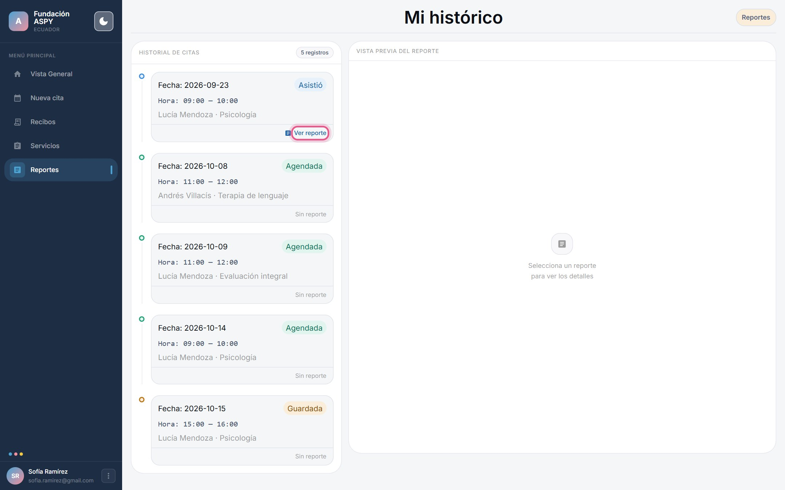
- Lee el reporte
Al presionar Ver reporte, el documento se abre a la derecha (en el celular, en una ventana que sube desde abajo). Con el botón Descargar lo guardas en tu equipo; es la forma más cómoda de leerlo en el celular.
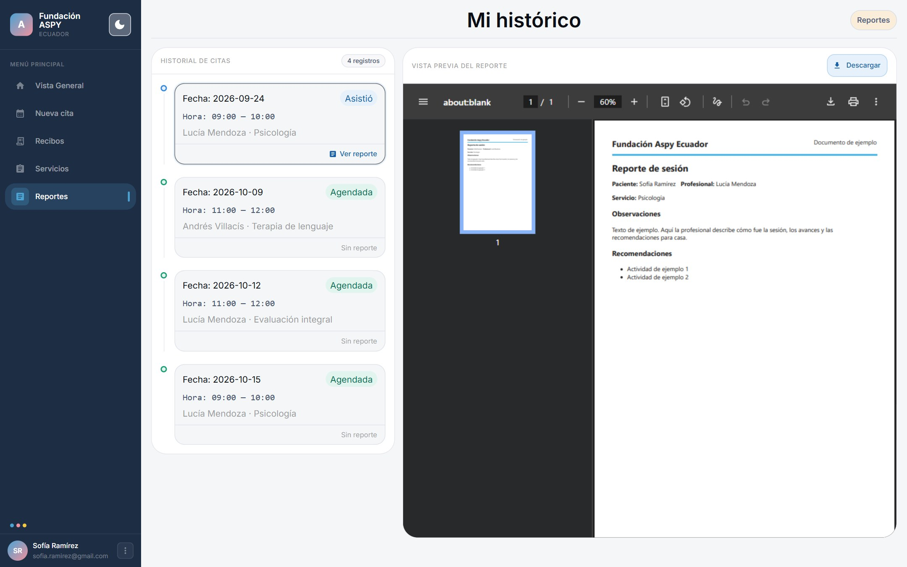
Tu perfil y cerrar sesión
Revisa y corrige tus datos personales cuando lo necesites.
Abrir tu perfil
Presiona el botón ⋮ junto a tu nombre (abajo a la izquierda). Ahí están Perfil, Manual de uso (este manual), Privacidad y mis datos, Sobre ASPY y Cerrar sesión.
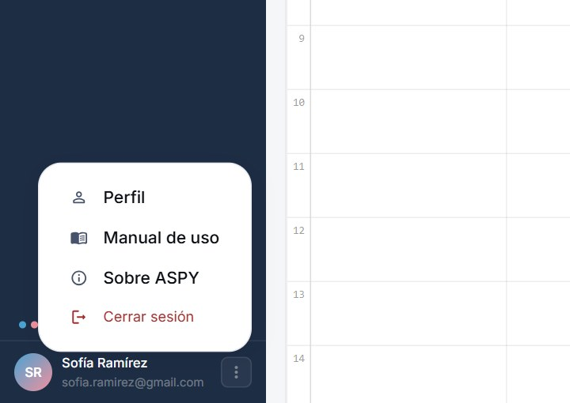
Este manual dentro del sistema
Con ⋮ → Manual de uso abres este manual sin salir del sistema. Desde ahí también puedes descargarlo en PDF o abrirlo en otra pestaña.
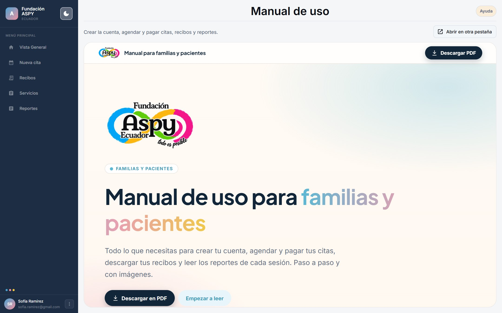
Editar tus datos
En tu perfil presiona el lápiz sobre tu foto.
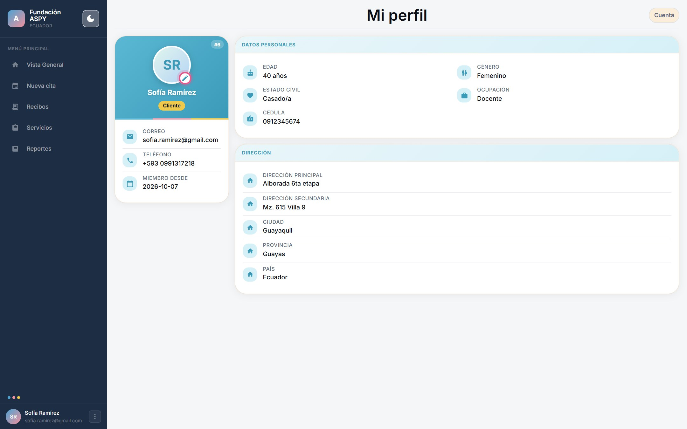
Se abre el mismo formulario de 3 pasos del registro, con tus datos ya llenos. Cambia lo que necesites y avanza con Siguiente hasta guardar.
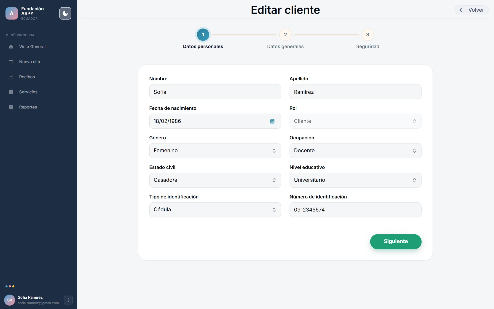
En el tercer paso (Seguridad) puedes escribir una nueva contraseña (mínimo 8 caracteres). Si dejas esos campos vacíos, se conserva la actual.
Privacidad y mis datos
Con ⋮ → Privacidad y mis datos ves cuándo aceptaste la política, tus derechos sobre tus datos y el texto completo de la política vigente. Tienes derecho a pedir a ASPY una copia de tus datos, que los corrija, que los elimine o que deje de usarlos; ASPY responde sin costo en un máximo de 15 días.
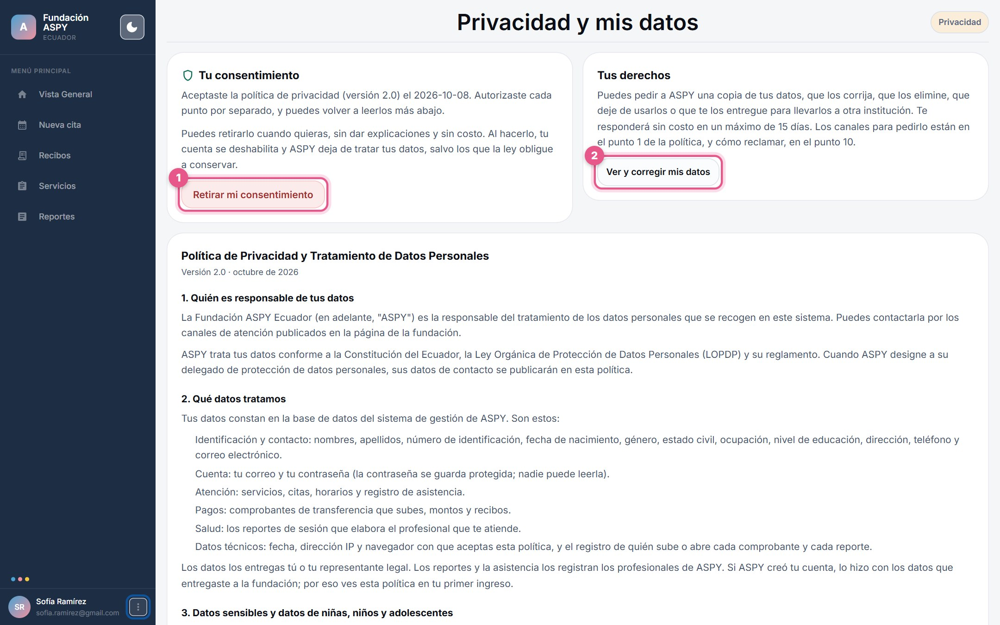
Ahí mismo puedes retirar tu consentimiento cuando quieras, sin dar explicaciones: presiona Retirar mi consentimiento 1 y confirma con Sí, retirar. El botón Ver y corregir mis datos 2 te lleva a tu perfil.
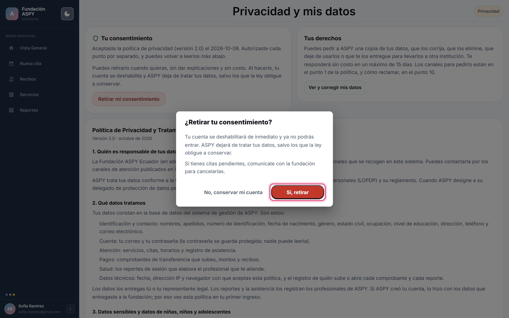
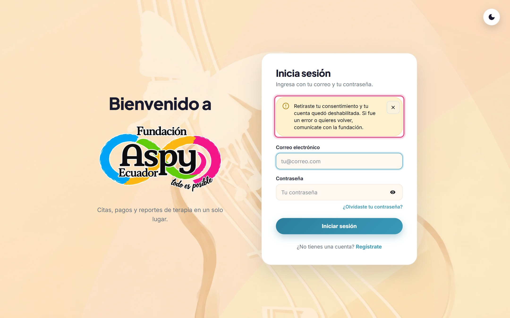
Al retirar tu consentimiento tu cuenta se deshabilita de inmediato y ya no podrás entrar. ASPY deja de usar tus datos, salvo los que la ley le obligue a conservar. Si tienes citas pendientes, comunícate con la fundación para cancelarlas. Si lo hiciste por error, la fundación puede volver a habilitar tu cuenta y el sistema te pedirá aceptar la política otra vez.
Cerrar sesión
En el mismo menú ⋮, presiona Cerrar sesión. Hazlo siempre que uses un equipo que no es tuyo.
Modo oscuro y uso en el celular
Modo oscuro
Si prefieres colores oscuros (por ejemplo, de noche), presiona el botón de la luna arriba a la izquierda. Para volver, presiona el sol. El sistema recuerda tu elección.
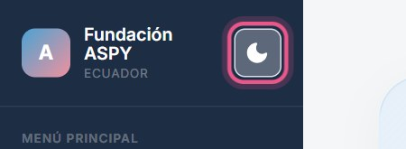
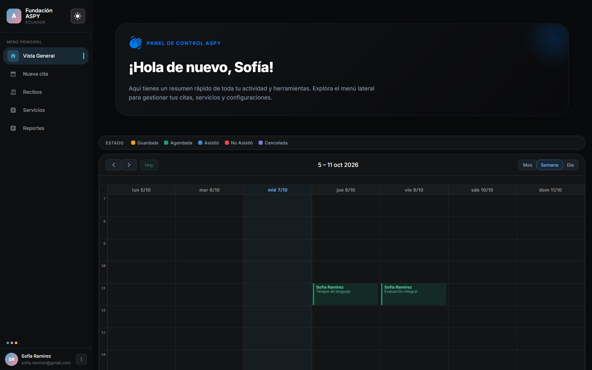
En el celular
El sistema funciona igual en el celular. El menú se esconde para dar más espacio: ábrelo con el botón ☰ de arriba a la izquierda. El botón de la luna (modo oscuro) queda siempre a la vista, arriba a la derecha.
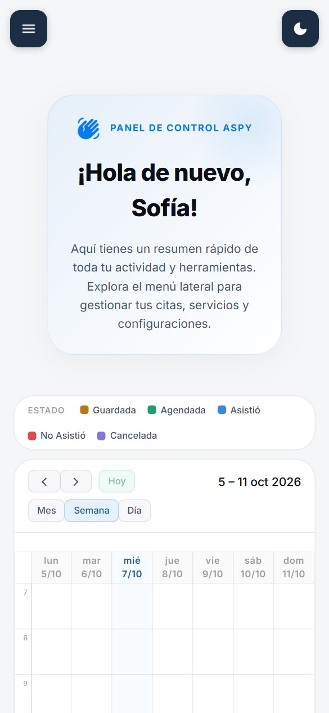
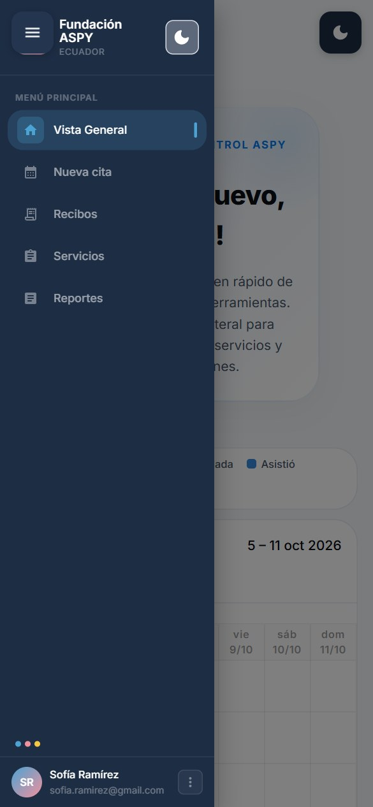
Preguntas frecuentes
¿Cuánto tarda la aprobación de mi pago?
Depende de la revisión del personal de ASPY. Mientras tanto, tu horario queda apartado. Si pasa mucho tiempo y la cita sigue en “Guardada”, comunícate con la fundación.
No veo días disponibles en el calendario.
Ese profesional aún no tiene horarios libres publicados. Prueba con otro mes (flechas del calendario), con otro profesional o consulta a la fundación.
Me equivoqué de comprobante.
Comunícate con la fundación. Si rechazan el comprobante, la cita se elimina y puedes agendar de nuevo con el comprobante correcto.
¿Puedo agendar para mi hijo o hija?
Sí. La cuenta queda a nombre de la persona registrada. Si necesitas una cuenta separada para tu hijo o hija, pide ayuda a la fundación.
Dice “Tu cuenta está deshabilitada”.
La fundación deshabilitó tu cuenta, así que no puedes ingresar (si estabas dentro, el sistema cierra tu sesión). Comunícate con la administración de la fundación para reactivarla.
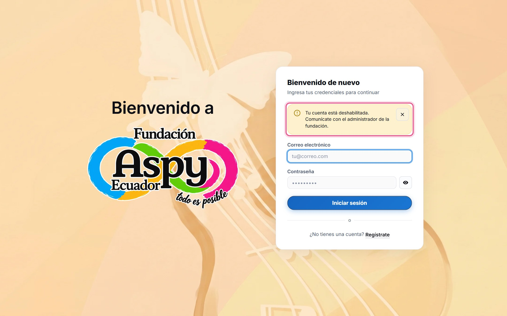
Mi ocupación no está en la lista.
Elige Otra y escribe tu ocupación en el campo que aparece al lado.
¿Quién puede ver mis reportes?
Solo tú, el profesional que te atendió y la administración de ASPY.